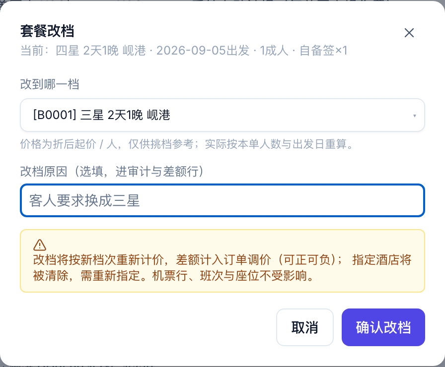
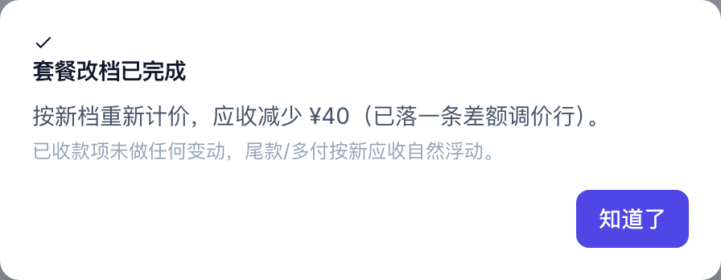
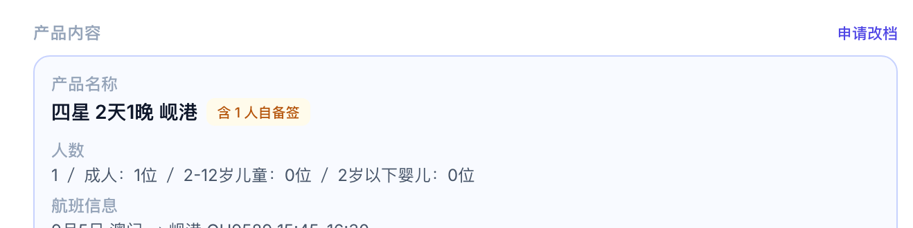
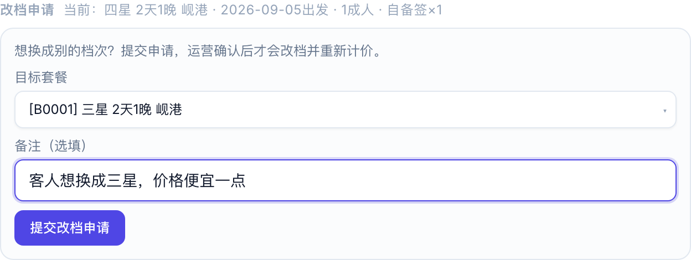
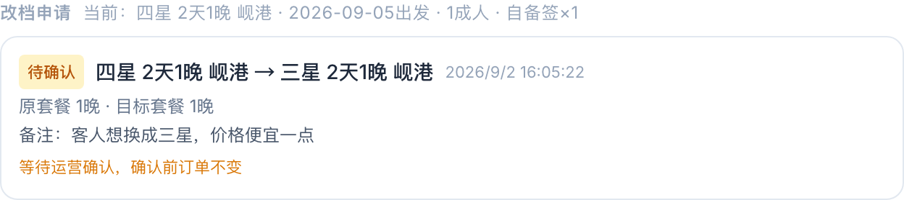
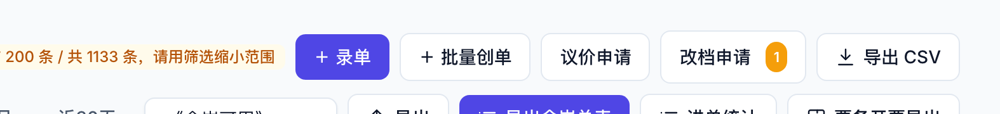
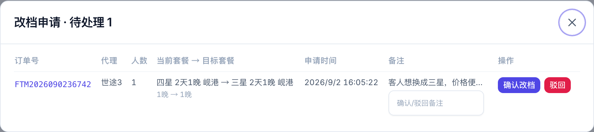
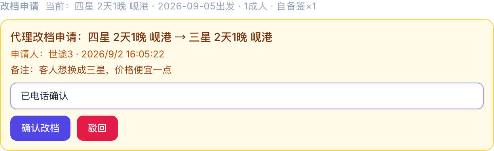
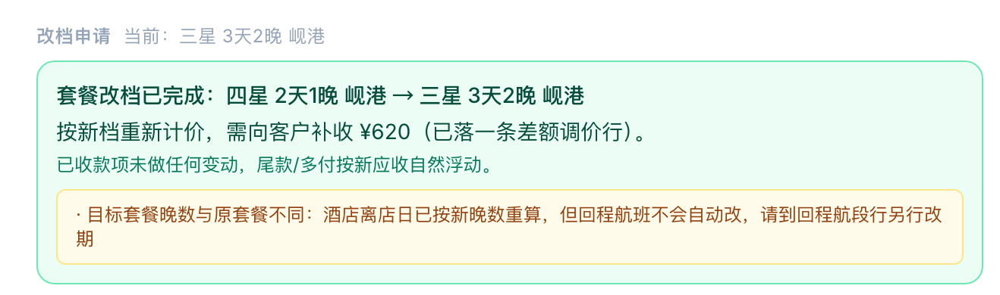
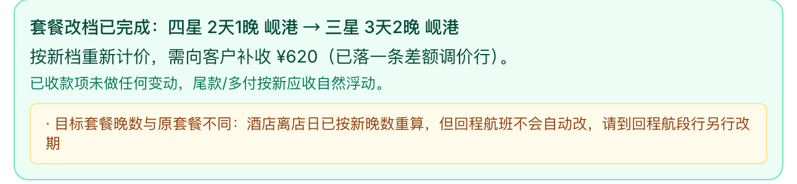

已录入的套餐单怎么换档次 · 运营直接改 · 代理提申请运营确认 · 2026-09-02
| 账号 | 能做什么 |
|---|---|
| 运营 / 管理员 | 在订单详情里直接改档，当场生效；处理代理提的改档申请（确认或驳回） |
| 代理 | 只能对自己名下的订单提「改档申请」，提了不生效，等运营确认 |
解决了什么：以前「套餐改档」按钮藏在「金额明细（点开）」里面，不好找。现在订单详情「产品内容」标题右边就有。
产品内容标题右边的「套餐改档」按钮

选目标套餐，填原因

改完会告诉你差额是多少、有没有要人工跟进的
解决了什么：代理以前没有任何入口，只能微信找运营。现在代理在订单详情里自己提，运营在系统里看到就能处理。

代理账号看到的是「申请改档」，点了跳到下面的区块

代理端的改档申请区块：选目标套餐，写备注，提交

提交后显示「待确认」，运营处理后这里会变成已确认或已驳回，驳回原因也在这
两个地方都能处理，跟议价申请一样。
按钮上的橙色数字是待处理条数。点开是队列，每行写着哪张单、哪个代理、从哪档改到哪档，能直接确认或驳回。

列表上方的入口，带待处理数

待处理队列

黄色卡片就是待处理的，下面可以写备注再确认或驳回

确认后当场执行改档，差额和提醒都显示出来
| 点什么 | 发生什么 |
|---|---|
| 确认改档 | 系统立刻按目标套餐重新计价并换档，差额记成一条调价行，代理那边看到「已确认」 |
| 驳回 | 订单不变，申请标为已驳回，写的原因代理能看到 |
改档能处理晚数变化：选「三星 4天3晚」这种目标套餐，酒店离店日会按新晚数自动往后推。但回程航班不会自动改。

晚数有变化时，确认结果里会提醒回程要另行改期
| 订单应收 | 按新档重算，「新应收 − 原应收」记成一条调价行，正数补收、负数减少 |
| 已收的钱 | 不动。尾款或多付按新应收自然浮动，多付的到付款情况里处理 |
| 代理单结算价 | 按目标档次和出发日在结算价日历里重新取价，立减规则照常生效 |
| 酒店 | 换到目标档次的随机池，离店日按新晚数重算；原来指定的酒店会被清除，需要的话重新指定 |
| 机票、签证、接送 | 全部不动 |
| 审计 | 谁提的申请、谁确认的、改前改后是哪档、差额多少，全部有记录 |
| 情况 | 怎么办 |
|---|---|
| 酒店已经落位到具体酒店（不是「X星随机」） | 先用「换酒店」把住宿处理掉，再改档 |
| 订单已取消 / 已退款 / 超时 | 不能改档 |
| 目标套餐已下架 | 换一个在售的档次 |
| 一张单里有多条套餐行 | 联系技术处理 |
| 已经有一条待确认的申请 | 先处理掉那条 |
世途旅行 · 运营控制台 | 套餐改档与代理改档申请操作说明 | 2026-09-02 | 文中金额与单号为演示数据